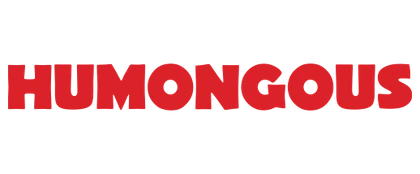
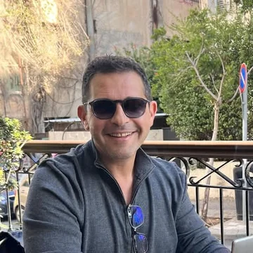

Humongous je izraelski lanac burger restorana koji su 2010. osnovala braća Bachar s ocem, nakon jednog razočaravajućeg obroka. Danas broji četiri restorana i oko 49.000 pratitelja na Facebooku.
Sredinom svibnja 2026. dobio sam poruku koja je u jednoj rečenici opisala cijeli problem: lanac je usred izrade igre za Svjetsko prvenstvo odlučio zamijeniti tvrtku koja ju je gradila. Vratili su se unatrag. A prvenstvo počinje 11. lipnja, htjeli oni to ili ne.
Odgovorio sam pola sata kasnije: teret dokazivanja je na meni.
Rok koji nitko ne može pomaknuti
Većina rokova je pregovaračka pozicija. Ovaj nije bio. Svjetsko prvenstvo počinje kad počinje, a marketinška kampanja, tiskani letci po restoranima i QR kodovi na stolovima već su bili naručeni oko tog datuma.
To mijenja način rada. Kad se rok ne može pomaknuti, jedino što se može pomaknuti je opseg — pa smo od prvog dana radili obrnutim redoslijedom: što je najmanja stvar koja može biti uživo najranije, i na što se zatim može dograđivati dok prvenstvo traje.
- 14. svibnjaPočetak. Prazan repozitorij, dokument sa specifikacijom, i datum koji se ne pomiče.
- 19. svibnjaPromotivna stranica uživo. Pet dana. Od tog trenutka svaka iteracija ide na nešto što stvarno postoji.
- 11. lipnjaDan otvaranja prvenstva. Igra je živa pred gostima, povezana s blagajnom i platformom vjernosti.
- 19. srpnjaFinale. Trideset devet dana bez ijednog pomaknutog roka.
Što je zapravo izgrađeno
Igra prognoziranja rezultata nije bila teški dio. Teški dio je bio sve ono na što se morala spojiti da bi imala smisla za restoran.
- Rezultati uživo iz cijelog prvenstva.Utakmice, sastavi, golovi i prolazi iz skupina povlače se automatski; bodovi se korisniku ažuriraju u trenutku kad utakmica završi.
- Razine i nagrade spojene na platformu vjernosti.Pet razina, svaka sa svojim setom pogodnosti. Igrač napreduje u igri, a pogodnost ga dočeka na blagajni u restoranu — bez ijednog ručnog koraka između.
- QR kodovi po restoranu i dnevni kodovi za dostavu.Svaki restoran dobiva svoj kanal, pa se registracije mogu pratiti po lokaciji i izvoru kampanje.
- Nadzorna ploča za voditelja smjene.Registracije, dolasci, dostave i stopa pridruživanja — uživo, po restoranu.
- Otkrivanje varanja.Kad se dijele bodovi za dolazak, netko će uvijek pokušati. Izvještaji označavaju sumnjive obrasce prije nego što postanu skupi.
Dio na koji sam zapravo ponosan
Brzina je najmanje zanimljiv dio ove priče. Svaki dobavljač obećava brzinu.
Sredinom lipnja, dok je prvenstvo bilo u punom jeku, otkrio sam vlastitu grešku: provjera je li igrač već član kluba stvarala je člana, a zatim ga čitala kao postojećeg — i dodjeljivala bonus koji mu ne pripada. Sto dvadeset i dva puta. Na račun klijenta.
Nitko to nije primijetio. Mogao sam tiho zakrpati kod i nastaviti dalje. Umjesto toga sam napisao poruku koja počinje s „ozbiljnije je nego što sam mislio, ovo je moja greška“, izmjerio točan iznos, popravio uzrok i ručno očistio 82 otvorena slučaja.
To je jedina stvar iz cijelog projekta koju bih htio da klijent zapamti. Kad netko gradi sustav koji dijeli vaš novac, jedino pitanje koje stvarno vrijedi jest hoće li vam reći kad nešto procuri.
Drugi čin: gašenje Mondaya
Usporedno s prvenstvom tekao je drugi projekt: selidba operacija lanca s Mondaya na vlastiti ERP sustav — zapošljavanje, ugovori, potpisi, prijave plaća, upiti iz oglasa.
Tamo se dogodio drugi trenutak koji vrijedi zapisati. Direktor operacija tvrdio je dva tjedna da upiti iz oglasa završavaju na krivim mjestima. Dva druga dobavljača provjerila su svoje strane i rekla da je sve u redu. Nastavio sam kopati dok nisam našao stvarni uzrok — obrada greške u datumu koja je upite tiho preusmjeravala na krivi restoran — i napisao izvještaj koji se može pokazati ljudima. Poruka koju sam poslao te večeri glasila je: nismo ludi.
Sustav je pušten u rad početkom lipnja, nakon tri probne selidbe podataka. Suradnja i danas traje.
Angažirao sam ga za jedan projekt. I dalje je s nama.

Što iz ovoga vrijedi za manju tvrtku
Malo tko ima Svjetsko prvenstvo kao rok. Ali gotovo svatko ima datum koji se ne pomiče — sezonu, sajam, inspekciju, kraj godine.
- Prvo pustite nešto malo uživo.Pet dana do prve verzije nije bio podvig brzine nego odluka o opsegu. Sve nakon toga bilo je poboljšanje nečega stvarnog, a ne nagađanje o nečemu što ne postoji.
- Spojite se na ono što već imate.Vrijednost nije bila u igri nego u tome što se pogodnost pojavila na blagajni. Sustav koji ne razgovara s vašim postojećim alatima uglavnom je ukras.
- Tražite dobavljača koji sam prijavljuje greške.Svatko će popraviti bug koji ste vi našli. Pitanje je što se događa s onima koje niste.
Imate datum koji se ne pomiče?
Recite mi što mora biti gotovo i do kada. Ako se može, reći ću vam kako. Ako se ne može, reći ću vam i to.
Pišite na WhatsApp → Ili pogledajte usluge i cijene · odgovaram isti dan · HR / EN